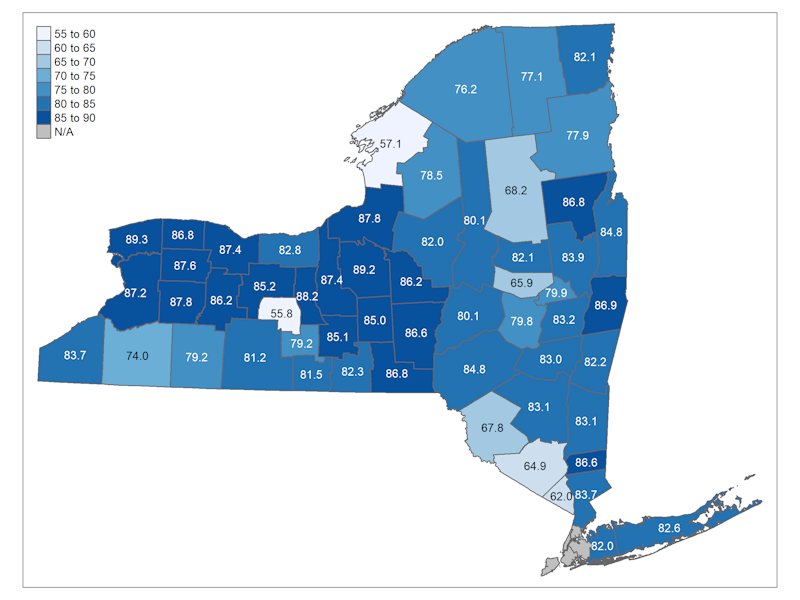
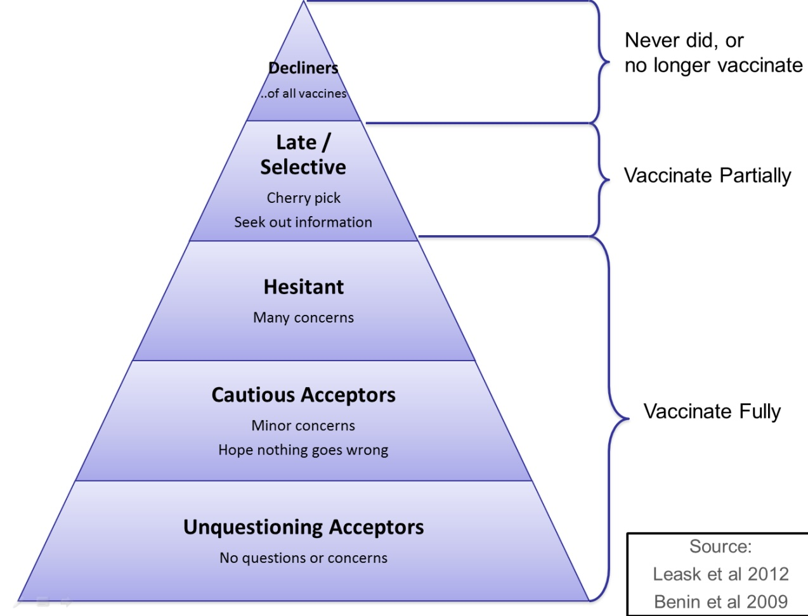

Fear of needles
When I was 17, I drove myself to the pediatrician for the first time, without my parents. After most of the physical exam had concluded, my doctor asked me if I wanted to get the relatively new meningococcal B vaccine. The CDC had recently recommended MenB vaccine for “individual clinical decision making.” I was at the right age to receive the vaccine, and there was a low but meaningful risk of the disease on college campuses at the time.
I was and remain terrified of needles (like over half of adults). My pediatrician knew this, since I had nearly passed out in his office a few years prior. The vaccine was new, and based on the relatively weak recommendation from the CDC ACIP, he told me: “You can probably skip this one.” With no parents there to tell me otherwise, that’s exactly what I did.
I diligently, if nervously, got all my flu shots in college. I even took myself to get a Tdap booster, after which I nearly fainted and had to lie down with a juice box at age 22. I jumped at the opportunity to get the single-dose J&J COVID-19 vaccine in 2021 because it meant I only had to get a single dose. I have never even attempted to give blood, since the couple of times I have had blood drawn, it has been a challenge to remain conscious. I try my best to put on a brave face, but even the sight of a needle on TV makes me lightheaded.

I completely understand the fear some people have of vaccines. Even if you can put up with the needles, which I can, its still unpleasant. Your arm hurts, you might feel off for a few days afterward. The weight-loss-drugmakers know this and are creating oral options. There are some oral and nasal vaccine options, but they haven’t been developed for all diseases and the performance of the vaccine can vary a bit. So for many people, they have to overcome a real fear to get vaccinated.
There’s a social component too. In college, there was a flu vaccine “fair” in the main student center, which all my friend attended and where some of my friends volunteered. There was a lot of (positive) peer pressure to get vaccinated.
An Outbreak in New York
In July 2022, I started a new job in the Office of Science at the New York State Department of Health. Just a few days in (I was still getting my computer set up), my boss called. “We don’t know for sure yet,” he said, “but we think there is a person hospitalized with polio down state.” “Polio?” I asked, puzzled. I genuinely thought we had eliminated polio from the US. Turns out that we had, and that this case was likely imported from abroad by a traveler to another country.
There was no team set up to deal with a polio outbreak. So several teams across NYSDOH and CDC, including our own, got to work. My boss had a specific ask for me. Could we estimate how many people were at risk of getting polio, and how many cases might we see in New York?
The case and subsequent outbreak occurred in the state’s significant Haredi Jewish community. While I am not Haredi myself, I grew up in the Modern Orthodox Jewish community in upstate New York. I knew plenty of religious Jews, including some who did not generally vaccinate themselves or their children. So when my boss asked how many people were at risk of getting polio, it was a question about understanding the dynamics of this community in particular.
This was not the first vaccine-preventable disease outbreak in this particular community (there had been mumps and measles within recent memory). Haredi Jews tend to have large families, so there were always young children vulnerable to these diseases being born. Each new outbreak led to a similar pattern: some parents would have their children immunized, and other children would get sick and survive with immunity, only for a new disease to show up a few years later for the cycle to repeat.
Following the 2018-2019 measles outbreak, the state eliminated non-medical exemptions to most vaccines for school entry. This worked, to a point. Some schools never complied, there have been occasional episodes of fraud, and some parents just delayed vaccination until school entry, leaving their children under 5 vulnerable. There was a lot of anti-vaccine sentiment in the community.

Honestly, I understood where they were coming from. There is frequent scrutiny by the state government and the media over how Haredi Jews run their schools. So when state officials came to them begging, once again, to bring their children in for vaccines, many parents were skeptical. Many parents were young and themselves not vaccinated. It wasn’t the social norm to get vaccinated, and it certainly wasn’t the norm to trust the government, or worse, faraway doctors whose vaccines did not appear to prevent repeated outbreaks from occurring.
We worked hard to come up with solutions, to rebuild trust so that people would choose to vaccinate their children. But ultimately it was a problem that took years to create, and one that will take years to solve.
What to do?
Fast forward to 2026, and obviously we have not solved this problem. Distrust in vaccines, and in public health in general, is higher than ever. HHS, led by RFK Jr., has removed some vaccine recommendations, and his handpicked leader of ACIP has questioned the need for polio and measles vaccines entirely.
Vaccine acceptance can be thought of as a spectrum or pyramid. At the bottom are those who receive all recommended doses. Then there are smaller segments of people that are hesitant or selective. They may get some vaccines, but maybe not all on the recommended schedule. At the top, the smallest group of people, are the decliners who receive no vaccines under any circumstances.

Recently Dr. Paul Offit called RFK Jr. a “vaccine cynic” which I agree is a much better term for him than “skeptic.” Skepticism is normal, and a healthy part of the scientific process. We should be skeptical of new vaccines and medical treatments, and carefully scrutinize the evidence when deciding whether to use them. That is just what scientists, doctors, and regular people all over the country have done for decades. I think that is what most people do who are hesitant or selective about vaccines. RFK Jr. and his supporters in the government are not like that. They contort evidence to fit their preconceived conclusions, a complete inversion of the scientific method.
I have a lot of empathy for those unsure about vaccines. Needles are scary. We don’t always feel we can trust what scientists and government officials are saying. I completely understand how someone might hear that vaccines don’t work or are unsafe and simply decide that its not worth it for them that day. I hope they can be persuaded otherwise one day.
I have a harder time understanding the vaccine cynic position. For me, its hard to understand why RFK Jr. is so opposed to vaccines, and why so many people find that view appealing. For a public health communications class, I recently read an article about “identity protection cognition”: basically the idea that people’s beliefs are downstream of their group identity. I think that is at least part of the answer, and something that effects us all. The author, Dan Kahan, also points out that those with the most scientific knowledge are often the most polarized. As someone with a good amount of scientific knowledge myself, I don’t want to fall into that trap. One fear I have about the public health field today is that we risk becoming so (reasonably!) angry by attacks on science that we risk losing our empathy for those who don’t share our views. Empathy which is non-negotiable in public health.
For my own part, I am interested in understanding why people choose not to vaccinate and how they can be persuaded to do so. I am far from an expert on this (and I’m sure this post violates some “best practices” in that area), but I hope to lead with empathy and transparency in the work that I do.